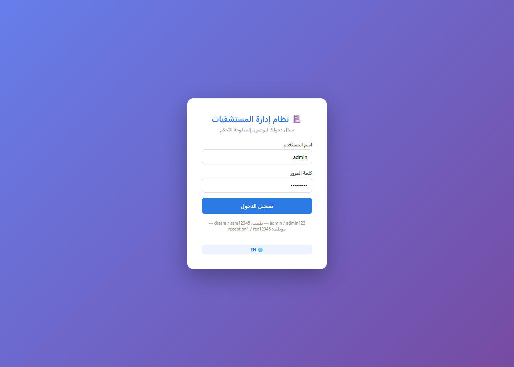
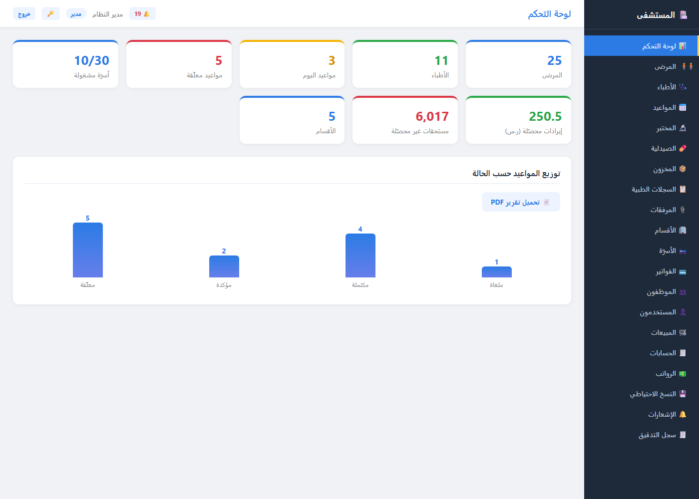
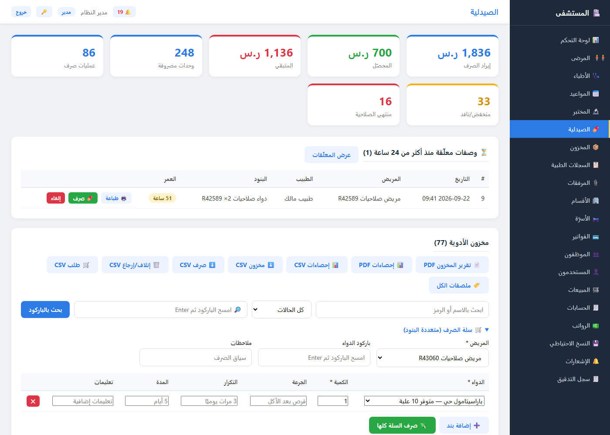
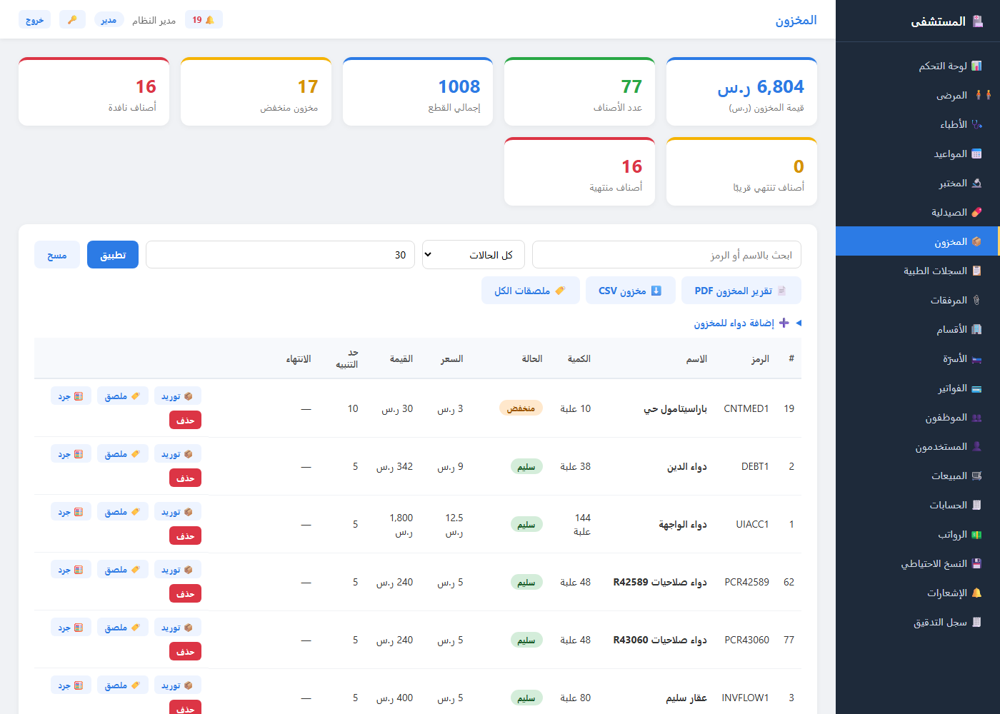
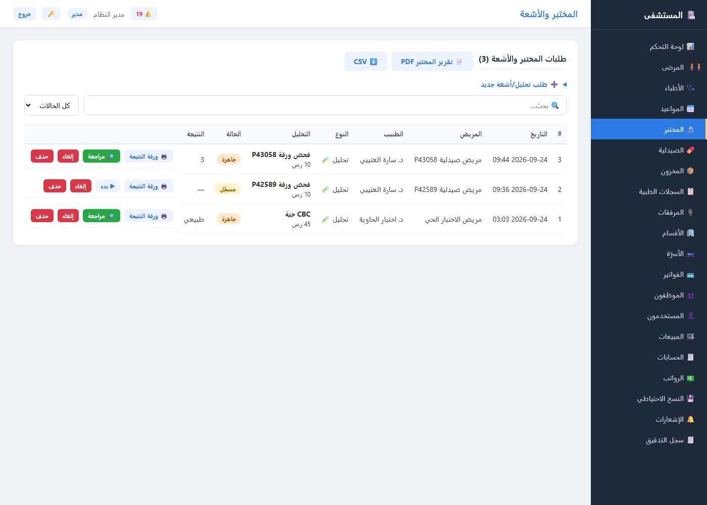
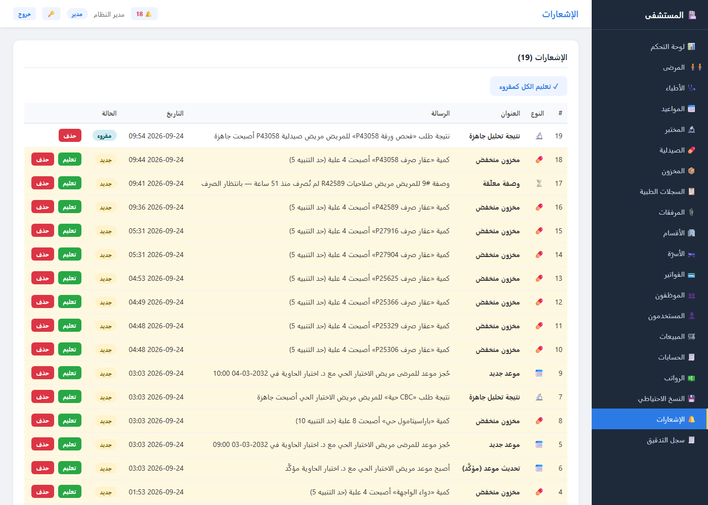

1 البداية: تسجيل الدخول 🔐
افتح / في المتصفح (أو زر «🖥️ فتح لوحة التحكم» في الصفحة الرئيسية). الشاشة الأولى
بطاقة دخول بسيطة على تدرّج أزرق — الحسابات الافتراضية مكتوبة أسفلها مباشرة:
| الدور | اسم المستخدم | كلمة المرور | ما يراه |
|---|---|---|---|
| 👨💼 مدير | admin | admin123 | كل النظام — بما فيها المخزون وسجل التدقيق |
| 🩺 طبيب | drsara | sara12345 | مرضاه وسجلاتهم وطلبات مختبرهم ووصفاتهم |
| 🧑💼 موظف استقبال | reception1 | rec12345 | المرضى والمواعيد والصرف — بلا إعدادات |
زر 🌐 EN يبدّل الواجهة والوثائق PDF كلها بين العربية والإنجليزية. المصادقة JWT
— كل بعدها محميّ بالترويسة Authorization: Bearer … (بلا توكن ← 401 لكل المسارات).

2 لوحة التحكم 📊
بعد الدخول مباشرة تظهر لوحة التحكم: بطاقات إحصائية حيّة (مرضى، أطباء، مواعيد اليوم والملغاة، الأسرّة المشغولة…) + رسم «توزيع المواعيد حسب الحالة» + زر تحميل تقرير PDF.
- 🔔 الجرس أعلى الشريط: عدد غير المقروءات (يحمرّ عند وجود جديد) ويتحدّث كل 30 ثانية — انقره للانتقال لصفحة الإشعارات.
- 🧭 الشريط الجانبي: 20 شاشة — المرضى، المواعيد، المختبر 🔬، الصيدلية 💊، المخزون 📦، المبيعات، الحسابات، سجل التدقيق…
- العنوان يسار الشريط العلوي يغيّر حسب الشاشة الحالية.

3 ⏳ تنبيه الوصفات المعلّقة (جديد)
مهمة خلفيةAPIواجهةأي وصفة PENDING لم تُصرف منذ أكثر من 24 ساعة (الحدّ STALE_RX_HOURS —
و0 يُعطل الميزة) تتحوّل إلى تنبيه يُنشأ مرة واحدة فقط — لا تتكرر مع كل دورة
(المنع عبر Notification.prescription_id).
أين تراها؟ ثلاث أماكن:
- بطاقة الصيدلية أعلى شاشة 💊: «⏳ وصفات معلّقة منذ أكثر من 24 ساعة (1)» — جدول صغير عمر الوصفة بالساعات + أزرار 🖨️ طباعة و💊 صرف وإلغاء وزر «عرض المعلّقات» الذي ينقلك لفلترها في الجدول الرئيسي.
- الجرس 🔔: رقم الإشعار الأصفر (نوع
rx_stale، أيقونة ⏳). - صفحة الإشعارات: صف «وصفة معلّقة» يشرح: رقم الوصفة، المريض، عدد الساعات، و«بانتظار الصرف».

4 🏷️ ملصقات باركود PDF (جديد)
GET /inventory/labelsواجهةنقطة واحدة تُخرج ملصقات جاهزة للطباعة لكل دواء: اسم + رمز + سعر + بَركود Code39 أسفله (مولّده مدمّج في الكود — بلا تبعيات ولا خطوط خارجية). الورقة A4 بشبكة 3×7 = 21 ملصقًا.
زرار في الواجهة:
- 📦 شريط المخزون: «🏷️ ملصقات الكل» + زر «🏷️ ملصق» بجانب كل صف.
- 💊 شريط الصيدلية: «🏷️ ملصقات الكل» أيضًا — ولكل دواء زر «🏷️ ملصق» داخل صفه.
- التنزيل باسم
med_labels.pdf(أوlabel_{code}.pdfلملصق واحد).
قواعد الحماية (جرّبها من Swagger):
- admin فقط ← غيره 403، بلا توكن 401.
?ids=فارغة ⇒ كل الأدوية · غير رقميةids=abc⇒ 400 «ids يجب أن تكون أرقامًا مفصولة بفواصل (مثال: 1,2,3)».- معرّف مجهول ⇒ 404 «لا يوجد دواء بالمعرف…» · لا توجد أدوية أصلًا ⇒ 404 «لا توجد أدوية لطباعة ملصقاتها».

5 🖨️ ورقة نتيجة المختبر PDF (جديد)
GET /lab-orders/{id}/pdfواجهةعلى كل طلب مختبر/أشعة زرّ «🖨️ ورقة النتيجة» — ورقة PDF أنيقة تحمل بيانات المريض والطبيب
ونوع التحليل وسعره والنتيجة النصية وحالة الطلب وتوقيع الختم، بالعربية أو الإنجليزية
حسب لغة الواجهة (?lang=ar|en).
ما الجديد في الشاشة:
- فلتر «كل الحالات» + حقل بحث أعلى الجدول — استخدمهما قبل الطباعة لعزل الطلبات الجاهزة.
- الحالات: مسجّل ← قيد التنفيذ ← جاهزة ← مراجَعة (النتيجة إلزامية قبل «جاهزة»).
قواعد الوصول (مطابقة لعرض الطلب):
- بلا توكن ⇒ 401 · طبيب يحاول ورقة طلب مريض آخر ⇒ 404 «لا يوجد طلب بالمعرف المحدد».
lang=frخطأ ⇒ 400 «lang يجب أن يكون ar أو en» — الفحص أولًا حتى لمعرفة مجهولة.- أسماء الملفات:
lab_result_{id}.pdf/lab_result_{id}_en.pdf.

6 🔔 صفحة الإشعارات — الصورة الكاملة
كل ما يُنبّهك النظام في مكان واحد: جدول بـ النوع (أيقونة) والعنوان والرسالة وتاريخ الحالة (جديد/مقروء) وأزرار «تعليم» و«حذف» + زر «✓ تعليم الكل كمقروء».
أنواع الإشعارات الحالية:
- ⏰ تذكير مواعيد قادمة (مهمة كل
REMINDER_INTERVAL_MINUTES— مرّة واحدة لكل موعد). - 📅 موعد جديد / تحديث موعد.
- 🔬 نتيجة تحاليل جاهزة (يُنشأ لحظة تغيير الحالة إلى «جاهزة»).
- 💊 مخزون منخفض عند بلوغ حدّ التنبيه.
- ⏳ وصفة معلّقة (جديد — انظر الخطوة 3): صف #17 في اللقطة أدناه.

rx_stale الذي أنشأته المهمة الخلفية مرّة واحدة، وسينتهي تكراره من نفسه.🎓 انتهى؟ الخطوة التالية
- 📘 دليل المستخدم الكامل — كل الشاشات والأدوار واستكشاف الأخطاء (وPDF: user-guide.pdf).
- 🧪 للفحص الآلي:
pytest(148 اختبارًا) ·pharmacy_flow_check.py(142 فحصًا) ·prescription_perms_check.py(50 فحص صلاحيات). - 🐙 المستودع: github.com/aymanhamid2020-dot/hospital-management-system.